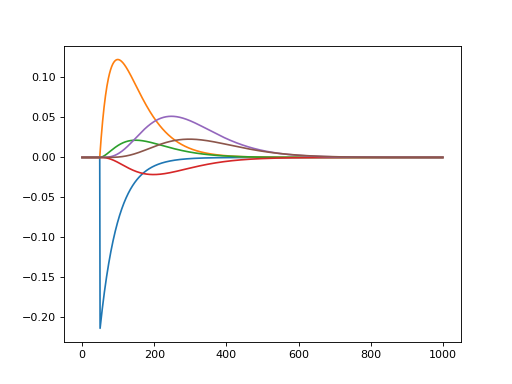

Filters convis.filters¶
Filters are basic Layers that have only one specific function, eg. a convolution. They can be combined into Models.
-
class
convis.filters.TimePadding(length=0)[source]¶ Remembers references to previous time slices and prepends the input with length many time steps from previous calls.
If the size of the image is changed without removing the state first, an Exception is raised.
To avoid this, call .clear_state(). This method is recursive on all convis.Layers, so you only have to call it on the outermost Layer. If you want to store your history for one set of images, do some computation on other images and then return to the previous one, you can use .push_state() and .pop_state().
-
class
convis.filters.Delay(delay=0, length=0)[source]¶ Causes the input to be delayed by a set number of time steps.
d = Delay(delay=100) d.run(some_input,10)Optionally, a length of input can also be prependet similar to the TimePadding Layer.
d = Delay(delay=100,length=10) # additionally preprends 10 timesteps of each previous chunk d.run(some_input,10)When the size of the image is changed, the previous inputs do not match, so an Exception is raised. To avoid this, call .clear_state(). This method is recursive on all convis.Layers, so you only have to call it on the outermost Layer. If you want to store your history for one set of images, do some computation on other images and then return to the previous one, you can use .push_state() and .pop_state().
-
class
convis.filters.VariableDelay(delays=None)[source]¶ This Layer applies variable delays to each pixel of the input.
Example:
v = VariableDelay(delays = d)
At the moment, the delays do not provide a gradient.
Possible future feature if requested: variable delay per pixel, channel and batch dimension.
-
class
convis.filters.Conv3d(in_channels=1, out_channels=1, kernel_size=(1, 1, 1), bias=True, *args, **kwargs)[source]¶ Does a convolution, but pads the input in time with previous input and in space by replicating the edge.
Arguments:
- in_channels
- out_channels
- kernel_size
- bias (bool)
Additional PyTorch Conv3d keyword arguments:
- padding (should not be used)
- stride
- dilation
- groups
Additional convis Conv3d keyword arguments:
- time_pad: False (enables padding in time)
- autopad: False (enables padding in space)
To change the weight, use the method set_weight() which also accepts numpy arguments.
-
set_weight(w, normalize=False, preserve_channels=False)[source]¶ Sets a new weight for the convolution.
Parameters: w: numpy array or PyTorch Tensor
- The new kernel w should have 1,2,3 or 5 dimensions.
1 dimensions: temporal kernel 2 dimensions: spatial kernel 3 dimensions: spatio-temporal kernel (time,x,y) 5 dimensions: spatio-temporal kernels for multiple channels
(out_channels, in_channels, time, x, y)
If the new kernel has 1, 2 or 3 dimensions and preserve_channels is True, the input and output channels will be preserved and the same kernel will be applied to all channel combinations. (ie. each output channel recieves the sum of all input channels). This makes sense if the kernel is further optimized, otherwise, the same effect can be achieved with a single input and output channel more effectively.
normalize: bool (default: False)
Whether or not the sum of the kernel values should be normalized to 1, such that the sum over all input values and all output values is the approximately same.
preserve_channels: bool (default: False)
Whether or not to copy smaller kernels to all input-output channel combinations.
-
class
convis.filters.RF(in_channels=1, out_channels=1, kernel_size=(1, 1, 1), bias=True, rf_mode='corner', *args, **kwargs)[source]¶ A Receptive Field Layer
Does a convolution and pads the input in time with previous input, just like Conv3d, but with no spatial padding, resulting in a single output pixel.
To use it correctly, the weight should be set to the same spatial dimensions as the input. However, if the weight is larger than the input or the input is larger than the weight, the input is padded or cut. The parameter rf_mode controls the placement of the receptive field on the image.
Currently, only rf_mode=’corner’ is implemented, which keeps the top left pixel identical and only extends or cuts the right and bottom portions of the input.
Warning
The spatial extent of your weight should match your input images to get meaningful receptive fields. Otherwise the receptive field is placed at the top left corner of the input.
If the weight was not set manually, the first time the filter sees input it creates an empty weight of the matching size. However when the input size is changed, the weight does not change automatically to match new input. Use
reset_weight()to reset the weight or change the size manually.Any receptive field of size 1 by 1 pixel is considered empty and will be replaced with a uniform weight of the size of the input the next time the filter is used.
See also
Or as a part of a cascade model:
>>> m = convis.models.LNCascade() >>> m.add_layer(convis.filters.Conv3d(1,5,(1,10,10))) >>> m.add_layer(convis.filters.RF(5,1,(10,1,1))) # this RF will take into account 10 timesteps, it's width and height will be set by the input >>> inp = convis.samples.moving_grating() >>> o = m.run(inp, dt=200)
-
class
convis.filters.SmoothConv(n=3, tau=0.1, spatial_filter=(10, 10))[source]¶ A convolution with temporally smoothed filters. It can cover a long temporal period, but is a lot more efficient than a convlution filter of the same length.
Each spatial filter .g[n] is applied to a temporally filtered signal with increasing delays by convolving multiple recursive exponential filters.
The length of the filter depends on the number of temporal components and the time constant used for the delays.
Each exponential filter .e[n] can have an individual time constant, giving variable spacing between the filters.
By default, the time constants are set to not create a gradient, so that they are not fittable.
To show each component, use get_all_components(some_input)
import matplotlib.pyplot as plt import numpy as np import convis s = convis.filters.SmoothConv(n=6,tau=0.05) inp = np.zeros((1000,1,1)) inp[50,0,0] = 1.0 inp = convis.prepare_input(inp) c = s.get_all_components(inp) convis.plot_5d_time(c,mean=(3,4)) c = c.data.cpu().numpy()
(Source code, png, hires.png, pdf)
See also
convis.filters.Conv3d- A full convolution layer
{kind=link}
{kind=link}
-
class
convis.filters.NLRectifyScale[source]¶ Rectifies the input, but transforms the input with a scale and a bias.
Pseudocode:
out = bias + in * scale out[out < 0] = 0
-
class
convis.filters.NLRectifySquare[source]¶ A square nonlinearity with a scalable input weight and bias that cuts off negative values after adding the bias.
-
convis.filters.sum(*args, **kwargs)[source]¶ concatenates and sums tensors over a given dimension dim.
See also
Examples
>>> inp = convis.prepare_input(np.ones((2,2,100,10,10))) >>> o = convis.filters.sum(inp,inp,inp,dim=1)
-
class
convis.filters.Sum(dim=0)[source]¶ A Layer that combines all inputs into one tensor and sums over a given dimension.
Can be used to collapse batch or filter dimensions.
See also
Examples
>>> s = Sum(1) >>> inp = convis.prepare_input(np.ones((2,2,100,10,10))) >>> o = s(inp,inp,inp)
Kernels convis.kernels¶
See also this notebook for numerical kernels.
This module collects convolution kernels.